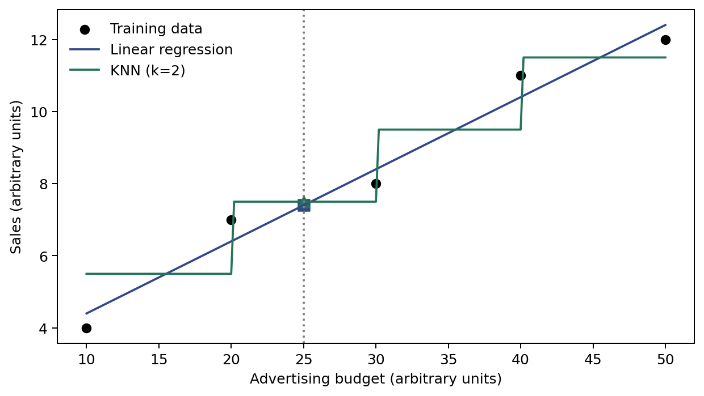

第二章 / 2.1.2 How Do We Estimate f?
绘制并保存图形
对应讲义中的代码 2.1.2-09。共 9 块，当前为第 9 块。
这一块使用前面代码块定义的变量，请先按顺序运行前面的代码。网页用于复制代码；运行请使用本地 Jupyter。
代码 2.1.2-09
逐步读代码
fig, ax = plt.subplots(...)同时接收整张图和绘图区；figsize=(7,4)使用英寸。X_train[:,0]取所有行的第一列，作为散点横坐标。scatter画独立的观测点，plot按网格顺序连接预测值；label设置图例文字，legend(frameon=False)显示无外框图例。axvline在新输入处画竖线；marker="s"和marker="^"分别用方形、三角形区分两种预测，s=60控制标记面积。set_xlabel、set_ylabel设置坐标名称；tight_layout()自动调整图内留白。Path("图片")指向当前工作目录的图片子目录，mkdir(exist_ok=True)在目录已存在时继续运行。- 路径对象的
/表示拼接路径。两次savefig分别保存矢量PDF和PNG，dpi=180设置位图分辨率，bbox_inches="tight"裁去多余外边距；plt.show()显示图形。
实际运行图形
